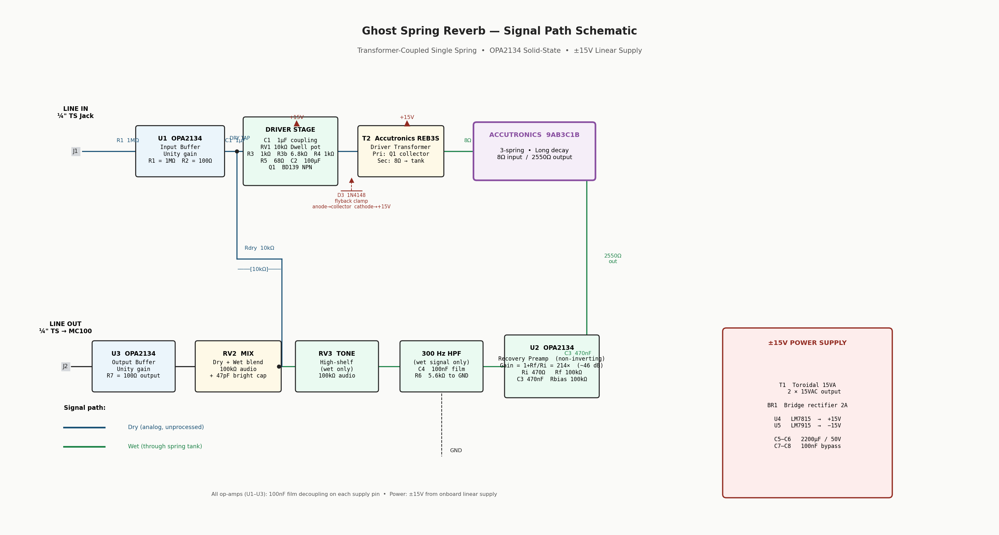

Full engineering specification for the Ghost Spring Tank — transformer coupling rationale, complete signal flow, component selection, output buffer, enclosure, and build rules.
One spring. One voice. Transformer-coupled for the organic bloom that no direct-drive circuit can replicate — the same mechanism that made the Fender 6G15 Reverb Unit sound like nothing else.

Generated from schematic.py — see schematic.py on GitHub
Every stage in the signal chain with component values inline. Left to right: input from line source, through the spring and back out to the power amp.
Line In (from Lehle Parallel M) → Input Buffer U1 OPA2134 · 1MΩ (R1) input · unity gain · R2 100Ω series output → Dwell Pot RV1 10kΩ linear · C1 1µF film coupling cap · controls drive level → BD139 Driver Q1 Class A · R3b 6.8k + R4 1k bias divider · R5 68Ω emitter degen C2 100µF bypass · ~19mA quiescent · D3 1N4148 flyback clamp → REB3S Xfmr T2 primary (from Q1 collector) → 8Ω secondary → 9AB3C1B Tank RT1 · 3 springs · long decay · 8Ω input / 2550Ω output → C3 Coupling 470nF film · blocks DC from tank output terminals → Recovery Preamp U2 OPA2134 · non-inverting · tank → (+) input · Ri=470Ω / Rf=100kΩ → gain=214× (~46dB) Rbias=100kΩ at (+) input to GND · 1–5mV → ~1Vrms → 300Hz Wet HPF C4 100nF film + R6 5.6kΩ · f = 1/(2π×5600×100n) ≈ 284Hz wet signal only — dry path bypasses this stage → Tone Pot RV3 100kΩ · high-shelf on wet signal only → Mix Pot RV2 100kΩ · Rdry=10kΩ summing · C_bright=47pF silver mica across wiper dry path (from U1 via Rdry) + wet path blend here → Output Buffer U3 OPA2134 · voltage follower · R7 100Ω series · <100Ω output Z → Line Out (to McIntosh MC100)
This is the part that makes the Ghost Spring sound like a spring reverb and not a plate sim. Most DIY spring reverb designs drive the tank directly from a transistor or op-amp output. That works — but it doesn't sound like a Fender 6G15.
The REB3S transformer's inductance forms a resonant circuit with the tank's input impedance (8Ω). This resonance creates:
The Accutronics REB3S is designed specifically for this application. It's used in boutique spring reverb units and is correctly matched to 8Ω tanks. Using a generic transformer (or no transformer) changes the resonant character fundamentally.
Three springs give a denser, more uniform reverb tail than two-spring tanks. Two-spring designs can produce a metallic "ping" on hard attacks because the two resonant modes are more distinct. Three springs blend into a closer-to-continuous reverb tail — the same reason the original Fender 6G15 and most boutique spring reverbs use 3-spring tanks.
Most DIY reverb designs filter before the driver — a HPF or shelving filter before the spring to prevent low-end boom. This unit takes the opposite approach: the full-bandwidth signal enters the spring, and the HPF is applied to the wet output after the recovery preamp.
The result: the physical attack transient (the full-frequency "thump") enters the spring intact, creating a realistic reverb bloom. The reverb tail is then filtered. Low-end boom clears up as the note decays, which is more natural than a pre-filtered attack.
HPF values: C4 100nF film + R6 5.6kΩ → corner at 284Hz (~300Hz). Use 5.6kΩ exactly — 4.7kΩ pushes the corner to 338Hz (too aggressive), 6.8kΩ drops it to 234Hz (insufficient mud rejection).
The Mix pot acts as a voltage divider at audio frequencies. At low mix settings, it attenuates high frequencies more than low frequencies — the reverb tails lose their shimmer before they lose their body. A 47pF silver mica capacitor across the Mix pot wiper bypasses the pot for high frequencies, keeping the reverb "glassy" even when nearly blended out.
Why silver mica: Silver mica is stable to ±1% over temperature. A ceramic disc capacitor will add high-frequency distortion that's audible in reverb tails. Do not substitute.
R5 (68Ω emitter resistor) provides thermal stability and sets quiescent current. Without C2, R5 degenerates the BD139's gain at audio frequencies — the spring is underdriven and loses high-frequency drive. C2 (100µF low-ESR Nichicon) bypasses R5 at audio frequencies, restoring full gain while keeping the DC stability of R5 intact.
The spring tank's output is 1–5mV. Line level is ~1Vrms. The recovery preamp (U2 OPA2134 in non-inverting configuration) brings the signal up to line level: tank signal enters the (+) input, Rbias (470Ω) holds the (+) input to GND for DC stability, Ri (470Ω) and Rf (100kΩ) form the feedback divider at the (−) pin → gain = 1 + (100k/470) = 214×. This is not unusual — spring tanks are low-output transducers, and this gain is normal for the stage.
Every component was chosen for a specific engineering reason. These notes are the difference between a build that sounds right and one that doesn't.
| Stage | Ref | Why OPA2134 |
|---|---|---|
| Input Buffer | U1 | FET input (10¹³Ω) places virtually no load on the upstream device. Unity-gain stable. |
| Recovery Preamp | U2 | FET input is critical here — U2 must load the tank's 2550Ω output without signal attenuation. THD+N=0.00008%. Slew rate 20V/µs eliminates slew-limiting distortion on pick transients. |
| Output Buffer | U3 | Voltage follower — drives the MC100's RCA input and any cable capacitance without treble loss. <100Ω closed-loop output impedance. |
Do not replace OPA2134 with NE5532 or TL072. Both have significantly higher noise floors and lower input impedance — the NE5532 is bipolar-input (low impedance) and will attenuate the tank's output signal at the recovery stage. The OPA2134 is specified throughout for consistency; you need only one part number and the builder can swap a section if one fails.
High-current NPN bipolar rated 1.5A / 80V. At 19mA quiescent current it runs well within ratings with negligible heat. The TO-126 package mounts flat against the chassis for passive heatsinking if needed. BD139 has excellent hFE linearity at low currents — critical for low distortion in the driver stage.
Do not use a TO-92 small-signal transistor (2N3904, BC547, etc.). Insufficient current capacity will clip drive transients and harden the reverb attack character. The BD139 TO-126 is specifically sized for this application.
All resistors are metal film, 1% tolerance. Carbon film resistors have higher noise (current noise 10–100× higher) and temperature drift that degrades the signal floor, especially in the 214× gain recovery stage. Order 5 of each value — metal film resistors are cheap and you want spares for the build.
| Ref | Value | Function | Why This Value |
|---|---|---|---|
| R1 | 1MΩ | Input impedance | Negligible load on upstream device. High-Z input. |
| R3b | 6.8kΩ | Upper bias divider | Sets base voltage to ~1.96V → Vc~1.3V → Ic~19mA |
| R4 | 1kΩ | Lower bias divider | Divider current (~2mA) = 10× base current → bias stable vs. hFE variation |
| R5 | 68Ω | Emitter degeneration | Ic = Ve/R5 = 1.3V/68Ω ≈ 19mA. Thermal runaway protection. |
| Ri | 470Ω | Gain set — (−) pin to GND | Gain = 1+(Rf/Ri) = 1+(100k/470) = 214× ≈ 46dB. Tank signal enters (+) pin; Ri forms the lower leg of the feedback divider at the (−) pin. |
| Rf | 100kΩ | Recovery gain (feedback) | 100kΩ keeps thermal noise below OPA2134's own input noise |
| R6 | 5.6kΩ | HPF corner | f = 1/(2π×5600×100n) = 284Hz. Use exactly 5.6kΩ. |
| Rbias | 100kΩ | U2 non-inv (+) input → GND | Sets recovery stage input impedance. 100kΩ ensures 97.5% signal transfer from the 2550Ω tank (470Ω would lose 84%). Sources from same 100kΩ stock as Rf — no extra BOM line. |
Ceramic capacitors have piezoelectric microphonics and voltage-dependent capacitance (distortion) at audio frequencies. All signal-path capacitors must be WIMA MKS2 film. This is non-negotiable in a hi-fi circuit with 214× gain in the recovery stage.
| Ref | Value | Type | Why |
|---|---|---|---|
| C1 | 1µF/63V | WIMA MKS2 film | Coupling before driver. HPF corner = 1/(2π×1µ×10k) = 16Hz — well below guitar fundamentals. |
| C3 | 470nF/63V | WIMA MKS2 film | Tank output coupling. Blocks DC offset from tank terminals. Corner at ~3Hz with Rbias = 100kΩ — purely DC-blocking, no audio attenuation. |
| C4 | 100nF/63V | WIMA MKS2 film | 300Hz HPF with R6. Must be film — ceramic drifts with temperature, shifting the cutoff. |
| C_bright | 47pF | Silver mica | Bright cap across Mix pot. Silver mica ±1% stability, lowest HF distortion. Do not use ceramic disc. |
| C2 | 100µF/25V | Nichicon UKW audio grade | Emitter bypass. Low-ESR is critical — high-ESR cap won't bypass R5 at high audio frequencies. |
| C5–C10 | 100nF/63V | WIMA MKS2 film | Op-amp supply decoupling — one per supply pin, placed as close as physically possible to IC. |
Military-grade cermet element, gold-plated wiper, stainless shaft, rated 10,000+ cycles. These are overkill for a guitar rig but they will outlast everything else in the build and will never develop contact noise.
Note on taper: MIL-SPEC pots are only certified in linear taper. Dwell (RV1) is correctly linear. Mix (RV2) and Tone (RV3) are linear as well — acceptable at line level. If audio taper is strongly preferred, substitute Bourns PDB18-B415 (pro audio grade, audio taper available).
The output buffer (U3) drives the McIntosh MC100's RCA input and any cable between the unit and the power amp. Without a buffer, the Mix pot's output impedance varies with rotation — at center position it's at maximum (half of 100kΩ = 50kΩ), which would roll off high frequencies through cable capacitance and interact unpredictably with the MC100's input.
The power supply is internal to the unit. No wall wart, no switching regulator — a toroidal transformer, bridge rectifier, and pair of linear regulators. This is the correct approach for a hi-fi reverb unit and the reason the circuit doesn't need external power management.
| Stage | Part | Why |
|---|---|---|
| Transformer | Triad F-219X, 15VA dual 15VAC toroidal | Toroidal has ~10× lower magnetic field leakage than E-I laminate. Critical — the spring tank is a sensitive magnetic transducer and will pick up 60Hz hum from a nearby transformer. Keep transformer as far from the tank as the chassis allows. |
| Rectifier | W04G bridge, 2A/400V | 400V is derated 10× from the 42V peak. 2A rating gives 4× headroom over typical load — reliable even with inrush. |
| Filter | 2× 2200µF/50V Nichicon UKW low-ESR | Ripple stays below 1Vrms at 20mA load. 50V rated for headroom against any transients. Low-ESR minimizes heat and maintains regulation. |
| +15V Reg | LM7815CT (TO-220) | Linear regulation = zero switching noise. Switching regulators inject kHz noise that passes through op-amp power supply rejection. LM7815 is proven and inexpensive. |
| −15V Reg | LM7915CT (TO-220) | Same rationale. Provides negative rail for op-amp negative supply pins. |
| Reg output caps | 2× 100µF/25V + 2× 100nF film | Electrolytic for stability per LM78xx/79xx datasheet; film in parallel for HF suppression above ~100kHz. |
The TO-220 tab is electrically connected to the output pin. Without mica insulating pads between each regulator and the chassis, mounting both regulators to the same chassis creates a short between +15V and −15V through chassis ground. Use TO-220 mica pads + M3 nylon screws or an insulated shoulder washer.
The 2U form factor is required — 1U is too tight to mount the 9AB3C1B tank horizontally with spring clearance. 2U gives comfortable room for the tank, PCB, power supply, and ventilation.
Hammond 1455T2201 — 2U aluminum rackmount. Aluminum is mandatory: steel would interact magnetically with the toroidal transformer. Rack ears are included with the Hammond chassis.
Rear Panel ─────────────────────────────────── Front Panel
│ │
│ ┌──────────────────────────┐ │
│ │ │ │
│ │ Spring Tank (9AB3C1B) │ ┌──────────┐ │
│ │ horizontal, open down │ │ Audio PCB │ │
│ │ grommet-isolated │ │ (Vector │ │
│ │ │ │ T44) │ │
│ └──────────────────────────┘ └──────────┘ │
│ │
│ ┌──────────┐ │
│ │ PSU PCB │ ← toroidal transformer here │
│ │ (Triad │ as far from tank as possible │
│ │ F-219X) │ │
│ └──────────┘ │
│ │
────────────────────────────────────────────────────
↑ IEC C14 inlet · Fuse · Rocker switch ↑
| Control | Type | Function |
|---|---|---|
| DWELL | 10kΩ linear pot, ¼" D-shaft | Drive level into transformer — spring saturation and reverb density |
| MIX | 100kΩ linear pot + 47pF bright cap | Dry/wet blend |
| TONE | 100kΩ linear pot | High-shelf EQ on wet signal only |
| Connector | Type | Notes |
|---|---|---|
| Input | Switchcraft 112A ¼" TS | From Lehle Parallel M output (future state) or directly from Alembic FX-1 |
| Output | Switchcraft 112A ¼" TS | To McIntosh MC100 RCA input (with 1/4" TS → RCA adapter cable) |
| IEC Power | Schurter 5110.1052 (EMI-filtered IEC C14 + fuse holder) | 500mA slow-blow fuse. Integrated EMI filter suppresses mains-borne noise before it reaches the transformer. Slow-blow essential — inrush current at power-on blows fast-blow fuses. |
| Power Switch | TE 1825232-1 SPST rocker, 6A/250V | Interrupts mains before transformer primary |
Custom 2U aluminum panel with laser-drilled holes and engraved labels. Holes required: 3× ¼" pot holes (DWELL / MIX / TONE), 2× ¼" jack holes (IN / OUT). IEC cutout and rocker switch hole on rear panel. Use Front Panel Express designer software to spec all hole positions to fit the Hammond 1455T2201 chassis dimensions.
These five rules are the difference between a working build and one that hums, oscillates, or drifts. Non-negotiable.
FR4 fibreglass is mandatory. The cheaper brown phenolic perfboard absorbs moisture and increases leakage current between pads — at the recovery stage gain of 214× this manifests as audible noise. Use 4× M3 nylon hex standoffs (not metal) to mount the board — metal standoffs can accidentally create a second chassis ground connection.
Spring tank polarity varies between Accutronics batches. If the reverb sounds hollow, thin, or "phasey" when mixed in at 50/50, the tank output is out of phase with the dry signal. Fix: swap the two wires at the tank's output RCA connector (the 2550Ω side). No design change needed — this is a 10-second wire swap on first commissioning.
Kester 44, 63/37 tin/lead, 0.031". Kester 44 is the standard for hand-soldered audio. 63/37 eutectic alloy — snaps solid with no mushy semi-solid phase, reducing cold joints. 0.031" diameter is correct for through-hole perfboard work. Do not use lead-free — higher melting point increases heat stress on sensitive components and produces higher-resistance joints.